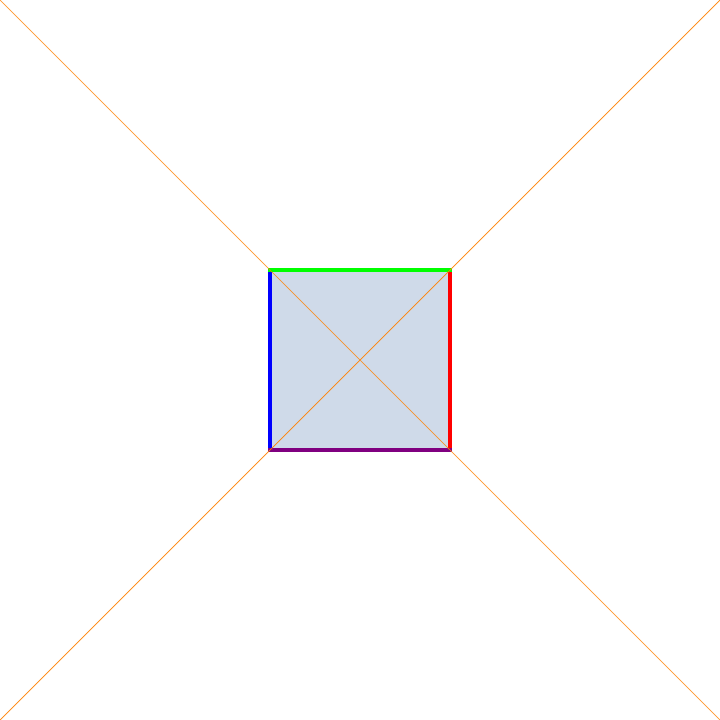

Visualization
Here you'll find some animations and pictures of mathematical objects I've made in some of my free time. Most of them are either from some projects I did experimenting with four dimensional rotations and stereographic projection, or animations of the action of the projective group acting on an affine patch. All of these are made in Mathematica.
Rotating Cube (non-generic)

Here is a rotating cube in non-generic position being orthogonally projected onto a plane, non-generic here meaning that there are faces of this cube constantly being projected to lines in the plane. In particular, the two faces perpendicular to the axis of rotation are being projected to two black line segments.
Rotating Cube (generic)
Here is a rotating cube in generic position being orthogonally projected onto a plane. This fact that the cube is in a generic position provides us a much better picture of the cube when projected onto the plane.
Perspective Projection
Here is a perspective projection of a rotating cube onto a plane. This projection can be imagined as like a movie theatre projection. The movie projector shoots out beams of light that hit the rotating cube and these light rays intersect the film screen.
The Actual Projection
This is an animation trying to depict what was described in the previous panel. The rays of `light' eminating from the `movie theatre projector' are depicted as the black lines hitting the plane of projection.
Stereographic Projection
Here is an animation of a cube projected onto the surface of a sphere and then stereographically projected onto a plane. The light source here is the south pole of the sphere. Consequently the face containing the south pole is projected to a non-compact subset of the plane.
4D Projection (non-generic)
Here is an orthogonal projection of a rotating four dimensional cube being projected onto a three dimensional hyperplane. The four dimensional cube is made of three dimensional `faces', and the cube is non-generic position much like the first animation. There are three dimensional faces that are projected to two dimensional squares throughout this animation.
4D Projection (generic)
Here is an orthogonal projection of a rotating four dimensional cube projected onto a dimensional hyperplane, but in generic position No three dimensional face constantly gets projected to a two dimensional square. This animation is like the second one on the first row.
4D Perspective Projection
This is a perspective projection of a rotating four dimensional cube onto a three dimensional `screen.' Here it is a lot easier to see the eight three dimensional faces that make up the four dimensional cube. While it may seem as though the red cube sits inside the blue cube, or vice-versa, this is an illusion of the perspective projection. Compare this phenomenon to that of row one figure three above.
Double Rotation
This is an animation of a four dimensional cube undergoing two simultaneous rotations in disjoint planes through a perspective projection. Such a double rotation is not possible in three dimensions.
4D Stereographic Projection

Similar to the stereographic projection above, we may project the faces of the rotating four dimensional cube onto the three sphere, and stereographically project. It is worth mentioning that the outer most `bubble' is actually projected to the complement of what you see. For instance, when the outside of this bubble blob is either entirely red or blue, the red or blue bubble is projected to the red or blue outer layer, but also everything lying outside and away from the bubble blob. This is to say that the image of the stereographic projection is all of space.
Translations
An animation of a square undergoing a sequence of translations in the plane.
Rotations
Here the square is undergoing both rotations and translations. These are the type of transformations that make up the orientation preserving isometries of the standard Euclidean metric.
Similarities
A square undergoing similarity transformations. Unlike the Euclidean isometries, the similarity group does not preserve lengths nor areas, but nevertheless preserves the notion of angles. Note how the square remains a square throughout all these transforms despite its area changing.
Affine Transformations
This is a square undergoing a sequence of affine transformations. Affine transformations are much more general than either the Euclidean isometries or similarities transformations. Note affine transformations fail to preserve angle, length, or area. One of the few invariants of the affine group is the notion of parallelism. Parallel lines are send to parallel lines under affine transformations. Note how the sides of the square remain parallel.
Projective Rotation
An animation of a projective rotation applied to square living inside an affine patch of projective space. The projective plane consists of the standard affine plane and is compactified by the points which correspond to equivalence classes of parallel lines. Note how the orientation of the boundary of the square is not preserved under these transformations. This illustrates the topological complexity of this space.
Hyperbolic Rotations
A square undergoing projective hyperbolic rotations. These maps preserve the orange lines in such a fashion where one is a line of contraction and the other is a line of expansion. The factors of expansion and contraction along these lines product to one. These are the analogue of hyperbolic rotations in the Minkowski plane that preserve the Minkowski metric $ds^{2} = dx^{2}-dy^{2}$.
Projective Scaling
I don't know if there is standard terminology for this, but these are projective transformations that are induced by matrices taking the form of the identity matrix with a scaling factor $s$ off the main diagonal. For example, a transformation taking $(x,y)$ to the point $(x,y)/(sy+1)$ for varying $s$ is depicting above. I call these scalings because the preserve the origin and all lines eminating radially from it.
Projectivities
A combination of several projective transformations. As one can see, the projective group acts very differently from what we are familiar with in Euclidean geometry. Both orientation and angles are lost under these transformations. Nevertheless, these transformations preserve the notion of colinearity.
(3,3,7) triangle group
A picture of the (3,3,7) hyperbolic tiling. In the hyperbolic plane, all these triangles are the same area. These hyperbolic triangle have angles $\pi/3, \pi/3$ and $\pi/7$. In the hyperbolic plane, specifying these angles unqiuely determines the triangle up to isometry, unlike the Euclidean plane. The tiling is generated by taking that unique triangle and reflecting it about all three edges and going wild. The blue triangles are the ones you get from an even number of flips, and the pink triangles are the ones you get from an odd number of flips.
(5,2,7) triangle group
Similar to the image before but with angles $\pi/5, \pi/2$ and $\pi/7$. Another way to identify this is by looking at the three vertices of a fixed triangle. Pick your favorite blue one for example. Around one vertex you can spin around and get 5 triangles. Around another vertex you can spin around and get 7 triangles. Around the last vertex you can spin and get two triangles. This occurs because of the way the groups are defined by reflections and the angle sums around each vertex have to add up to $2\pi$.
(5,5,5) triangle group
Here's one last one where all the you get 5 triangles around each vertex. There's going to be a unique triangle for each such triple $(n,m,p)$ where $1/m + 1/n + 1/p < 1$. This is a consequence of some relatively basic planar hyperbolic trigonometry and the hyperbolic version of the Pythagorean theorem. Caroline Series, Sara Maloni, and Khadija Farooq have some really nice notes of this I suggest checking out if you are interested. However, this is not true in the projective case, and as a consequence you can typically deform these groups. Check out Antonin Lukyanenko's Master's thesis for projective deformations of these groups.